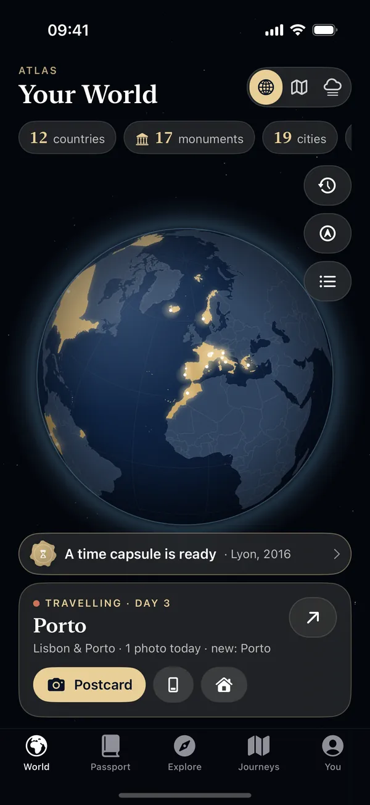
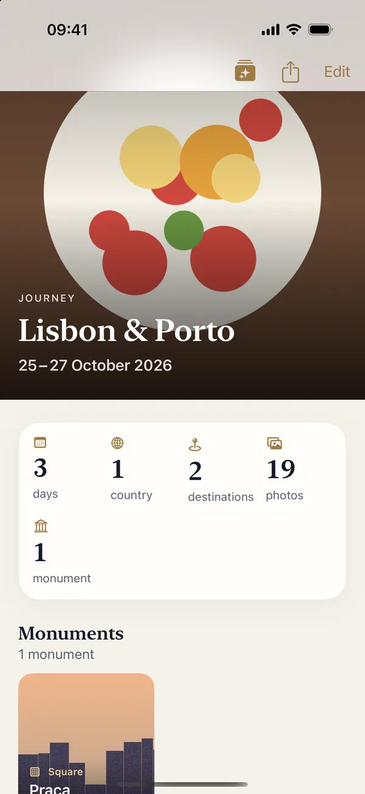
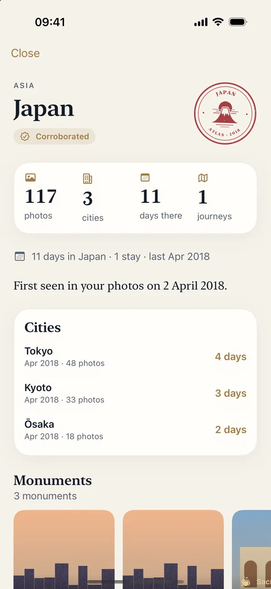
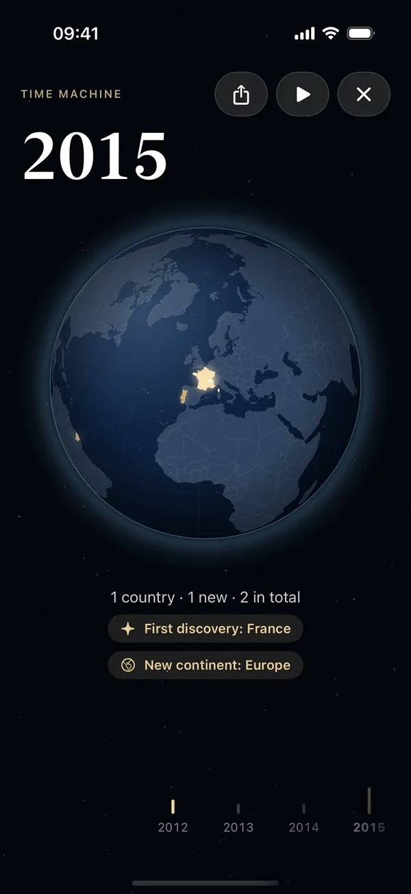
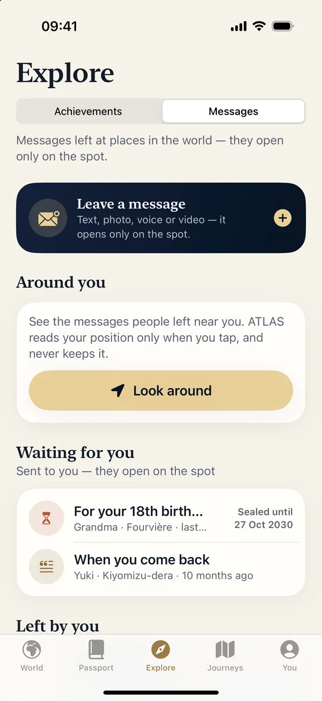
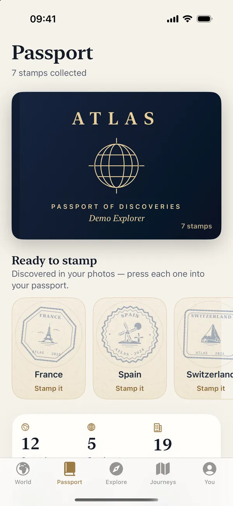
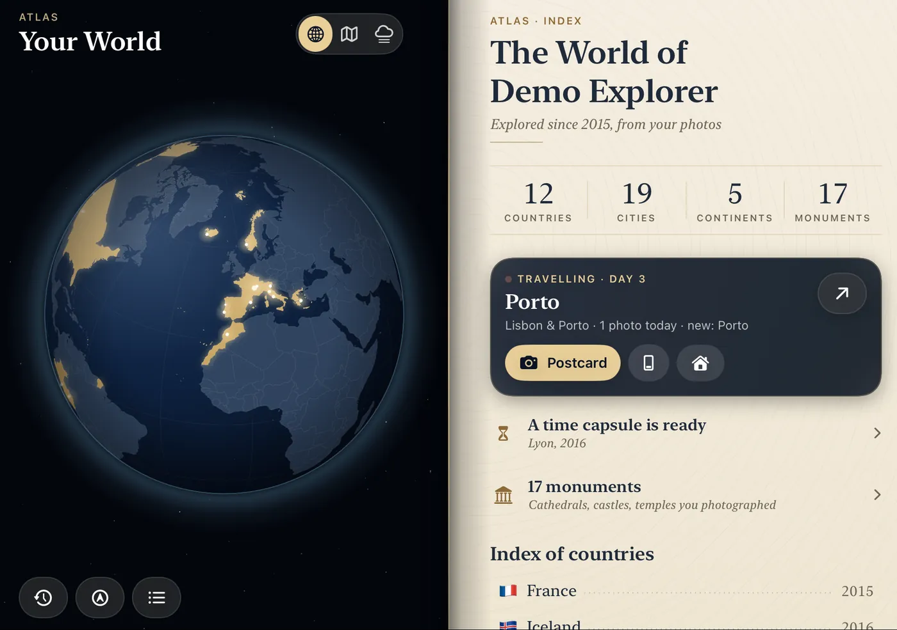
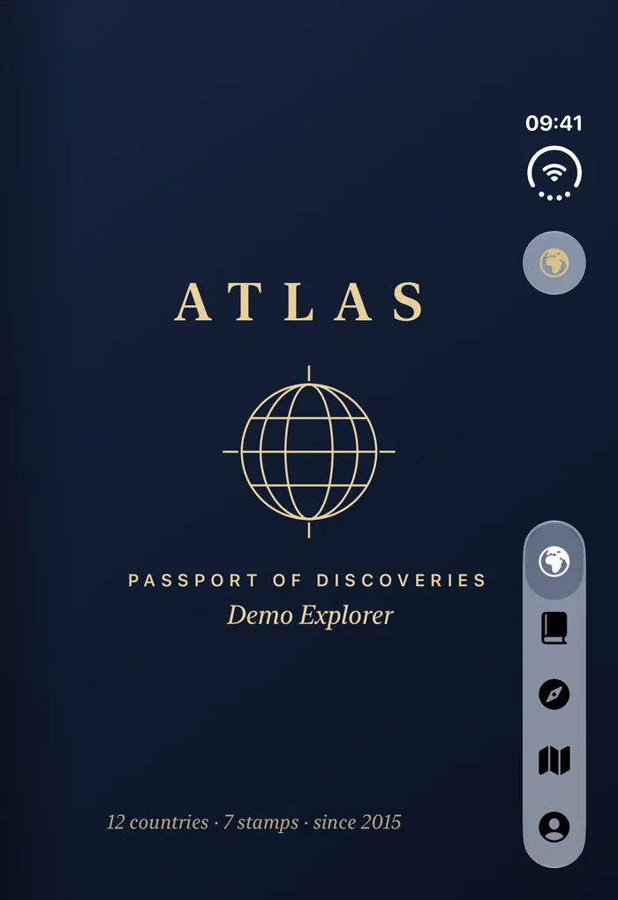

Your world, lit up.
Every country you’ve explored glows in gold on a 3D globe. Turn it, zoom in, switch to the map or the fog of war — and watch it fill up trip after trip.
Your life, explored
ATLAS reads the dates and places in your photos and turns them into a living globe, journeys rebuilt for you and a passport of original stamps — privately, on your iPhone.
Drag the globe — the gold countries are a demo atlas
Passport of discoveries
No check-ins, no lists to fill. ATLAS finds your countries in your photos — and you press each original stamp into your passport yourself.
Entries
— 1 —
On your iPhone






Every country you’ve explored glows in gold on a 3D globe. Turn it, zoom in, switch to the map or the fog of war — and watch it fill up trip after trip.
ATLAS groups your photos into journeys — dates, cities, monuments — and keeps everything editable. While you travel, the trip writes itself.
Cities, photos, monuments, and the days you really spent there — country by country, city by city.
The Time Machine replays your life year by year as the globe lights up. Share the year that changed everything.
Hide a text, a photo, a voice note or a video at a place. It opens only for the people you choose — once they’re there. Even years later.
Original stamps for every country, achievements earned from real discoveries, your travel DNA — never from daily streaks.
Made for iPhone Duo
Closed, ATLAS shows your passport’s cover — or the globe, your choice. Unfold your iPhone: the cover turns over the hinge onto your atlas, the globe on the left page, the world of you on the right. Then turn the passport’s pages like a book.


Privacy first
Places, journeys and landscapes are worked out on your device.
All your photos, a selection, or none at all — you can add journeys by hand.
Your photo library never leaves your iPhone. No account needed, no ads, no tracking.
Delete everything ATLAS created in one tap. Your photos are never modified.
Messages is optional — the only part of ATLAS that uses a server, and only if you sign in. Read the privacy policy.
ATLAS
Passport of discoveries